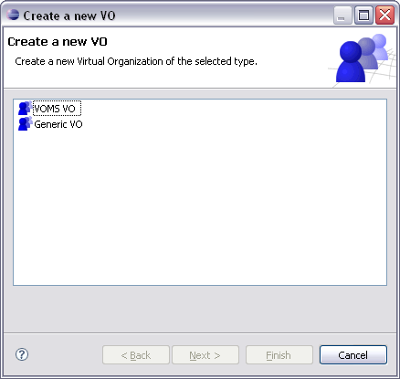
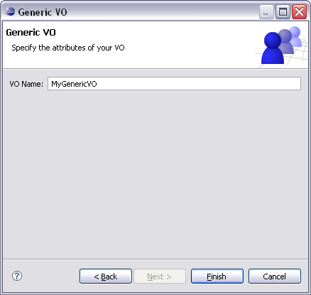

You can use the
 g-Eclipse > VO-Declarations preference page to declare a new
Virtual Organization. There, you can click Add... to start the
VO Wizard. If you have installed g-Eclipse with a middleware extension,
the VO Wizard may show up a first page that let you choose the
type of the VO you want to create:
g-Eclipse > VO-Declarations preference page to declare a new
Virtual Organization. There, you can click Add... to start the
VO Wizard. If you have installed g-Eclipse with a middleware extension,
the VO Wizard may show up a first page that let you choose the
type of the VO you want to create:

For the setup of a middleware specific VO, please see the corresponding
help pages of the middleware. If no middleware extension is
available, the VO Wizard will directly switch to the wizard page
for setting up a generic VO:

All you have to do here is to enter a name for your generic VO and to press
Finish. The newly create VO will then be shown in the VO
preference page.
To edit the settings of a VO open the
g-Eclipse > VO-Declarations preference page. Select the VO
you would like to edit and click Edit....
The VO Wizard shows up and automatically switches to the wizard
page where in which the settings of the selected VO can be edited. Note that you
can change any setting except the VO's name. After performing your changes, click
Finish and the new VO settings will be saved.
To start editing a VO you can also simply double-click the VO in the
list of all currently available VOs.
To delete one or multiple VOs, open the
g-Eclipse > VO-Declarations preference page. Select the
VO you want to delete. You may also select multiple VOs that will
be deleted in a single operation. Click Remove and the
selected VO(s) will be deleted from the list of declared VOs.